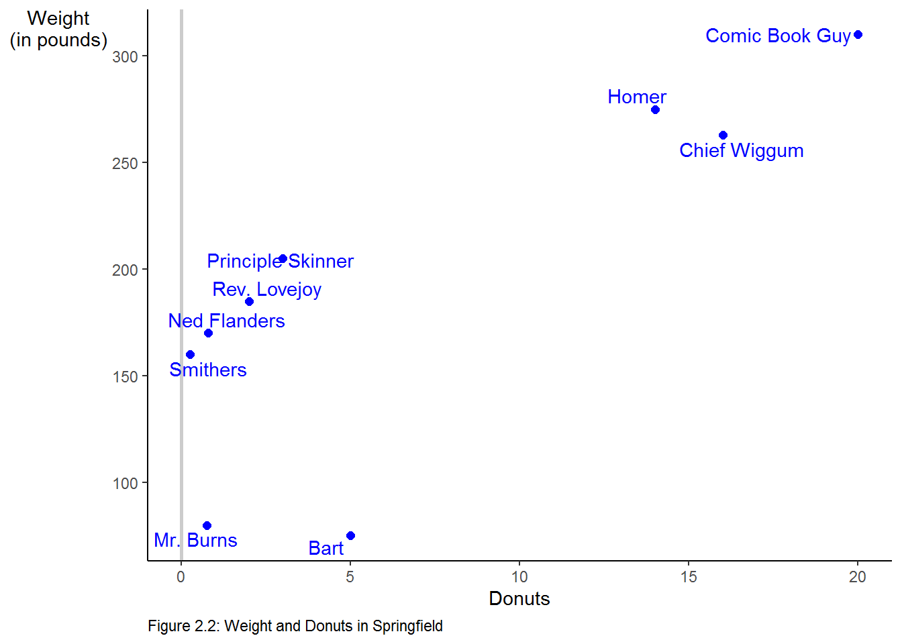

Chapter 4 Stats in the Wild: Good Data Practices
4.1 Introduction
I will introduce some additional R commands and packages through reproducing Table 2.1, Table 2.2, Table 2.5, and Figure 2.3. In addition, we will go through the Computing Corner.
4.2 Table and Figure Reproduction
4.2.1 Table 2.1
Since we saved the data frame we created in Chapter 1 as donuts.RData, we will load the file into global environment. We are only interested in the summary statistics for Weight and Donuts. We can get a basic set of summary statistics by calling summary on the data frame. But, stargazer from
the stargazer package. The stargazer produces well formatted tables in LaTex code, HTML code, and ASCII text.
We will make use of the pipe operator from the magrittr package (also part of the tidyverse), as well. The pipe operator %>% (ctr-shift-m shortcut in R Studio) allows for more intuitive reading of code especially when nesting commands inside of each other. Take a simple example of finding calling the str command on a data frame, df. Without the pipe operator %>%, we would call the command like this str(df) and you might read this aloud alike this find the structure of df. With the pipe operator, call the command like this df %>% str(). Read aloud it might be something like this “take the df data and find its structure.” The pipe operator really shines when functions are nested together, as we shall see below.
load("donuts.RData")
library(tidyverse)
library(stargazer)
donuts %>%
# choose and rename the columns
select("Weight" = weight, "Donuts" = donuts_per_week) %>%
# stargazer doesn't play nice with tibbles so we coerce donuts to a data frame
as.data.frame %>%
# tell stargazer to produce an ASCII text version of the table
stargazer(type = "text",
title = "Table 2.1",
# omit the default 1st and 3rd quartiles
omit.summary.stat = c("p25", "p75"))
Table 2.1
=====================================
Statistic N Mean St. Dev. Min Max
-------------------------------------
Weight 13 172.000 76.200 70 310
Donuts 13 5.450 6.750 0 20
-------------------------------------We can return similar summary statistics with descr from the summarytools package.
donuts %>%
# choose the variables we'd like to summarize
# here we choose "away" from observation number
# descr will ignore non-numeric vectors
select(Weight = weight, Donuts = donuts_per_week) %>%
summarytools::descr(stats = c("n.valid", "mean", "sd", "min", "max"),
round.digits = 3,
transpose = TRUE) %>%
DT::datatable(caption = htmltools::tags$caption(
style = "caption-side: bottom; text-align: left;",
"Table 2.1"),
class = "cell-border stripe",
colnames = c("N", "Mean", "St. Dev.", "Min", "Max"),
options = list(dom = "t"))4.2.2 Table 2.2
To reproduce Table 2.2 we will need to add a variable named male which will take on the value 1 for each observation in the data that represents a male and a 0 otherwise.
\[male = \begin{cases} 1 & \text{if observation is male} \\ 0 & \text{if observation is female} \end{cases}\]
We will make use of mutate() from the dplyr package. We use mutate() when we want to create a new variable from existing variables in the data frame.
load("donuts.RData")
donuts$name # this syntax reads "print the variable name from the donuts data frame". [1] "Homer" "Marge" "Lisa"
[4] "Bart" "Comic Book Guy" "Mr. Burns"
[7] "Smithers" "Chief Wiggum" "Principle Skinner"
[10] "Rev. Lovejoy" "Ned Flanders" "Patty"
[13] "Selma" The square brackets [] indicate the position of each observation in the vector. So, in position [9] is Principle Skinner.
Making use of donuts$name we see that the observations 1, 4, 5, 6, 7, 8, 9, 10, 11 are male and observations 2, 3, 12, 13 are not. We add the variable male to the donuts data frame as follows:
Call table to create a rudimentary version of Table 2.2
.
0 1
4 9 4.2.3 Table 2.5
To reproduce Table 2.5 we must first retrieve the data. We will retrieve the data directly from the agencies responsible for their collection. You can retrieve the data as a comma-separated values (csv) file. A csv file is a plain text file in which the data are stored in a tabular format with values separated by a comma.5
The crime data can be found on the U.S. Department of Justice Federal Bureau of Investigation Uniform Crime Reporting Statistics website. The single parent, urban, and poverty data can found on the U.S. Census website.
An investigation of the CrimeOneYearofData.csv file shows that there is meta information contained in the file along with the data. We could open the csv file in Excel and edit it to remove the information or we could read it directly into R using read_csv from the readr package6 with options to ignore the meta information. The readr package has many advantages over the base R read functions, see vignette("readr") for more information.7
We can view the file by clicking on it in the Files tab of the pane in the lower right corner. Choose the view file option and a new tab will open in the source pane.8 We see tat the first nine rows are either blank or contain information about the data and that rows 63 to 183 contain footnotes and other additional information about the data. The names of the variables are in row ten of the csv file; so, we will skip the first nine rows using the argument skip. We will choose the rows that contain the states and Washington, D.C., with the n_max option.
crime_one_year_of_data <-
# read the data from its location
read_csv("Data/CrimeOneYearofData.csv",
skip = 9, # start at row 10
n_max = 51) # use only 51 records
crime_one_year_of_data# A tibble: 51 x 9
State Population `Violent Crime ~ `Murder and non~ `Legacy rape ra~
<chr> <dbl> <dbl> <dbl> <dbl>
1 Alab~ 4708708 450. 6.8 31.9
2 Alas~ 698473 633. 3.1 73.4
3 Ariz~ 6595778 426. 5.8 34.6
4 Arka~ 2889450 516. 6.2 47.7
5 Cali~ 36961664 473. 5.3 23.6
6 Colo~ 5024748 339. 3.2 45.2
7 Conn~ 3518288 301. 3 18.7
8 Dela~ 885122 645. 4.6 44.6
9 Dist~ 599657 1349. 24.2 25
10 Flor~ 18537969 612. 5.5 29.7
# ... with 41 more rows, and 4 more variables: `Revised rape rate /2` <lgl>,
# `Robbery rate` <dbl>, `Aggravated assault rate` <dbl>, X9 <chr>Similar to ggplot being based on the grammar of graphics, dplyr is a grammar of data manipulation. dplyr consists of a set of “verbs” to help solve common data manipulation problems. To learn more about dplyr read vignette("dplyr"), visit dplyr, or for a good introduction visit the data import chapter in R for Data Science.
Using glimpse from dplyr, we see that we have a tibble with 51 observations and 9 variables. glimpse is similar to str.
Rows: 51
Columns: 9
$ State <chr> "Alabama", "Alaska", "A...
$ Population <dbl> 4708708, 698473, 659577...
$ `Violent Crime rate` <dbl> 450, 633, 426, 516, 473...
$ `Murder and nonnegligent manslaughter rate` <dbl> 6.8, 3.1, 5.8, 6.2, 5.3...
$ `Legacy rape rate /1` <dbl> 31.9, 73.4, 34.6, 47.7,...
$ `Revised rape rate /2` <lgl> NA, NA, NA, NA, NA, NA,...
$ `Robbery rate` <dbl> 133.1, 93.6, 124.3, 89....
$ `Aggravated assault rate` <dbl> 278.3, 463.2, 261.8, 37...
$ X9 <chr> NA, NA, NA, NA, NA, NA,...We see that State is a character vector and Violent Crime Rate is a numeric vector. Looking at the names of the variables we can see they do not adhere to the stylistic guidelines discussed above. The State variable begins with a capital letter and the Violent Crime Variable has capital letters and spaces in its name (the spaces are why you see the tick mark “`” before and after the name). The state names are spelled out, but to reproduce Figure 2.3 we need to change those to two-letter abbreviations.
To bring the names into stylistic guidelines we can use clean_names from the janitor package, snake case is the default conversion. Note, the versatility of the %>% operator. If we did not use the %>% operator, the code would have been written as glimpse(crime_one_year_of_data <- clean_names(crime_one_year_of_data))
library(janitor)
crime_one_year_of_data <-
crime_one_year_of_data %>%
clean_names()
crime_one_year_of_data %>%
glimpseRows: 51
Columns: 9
$ state <chr> "Alabama", "Alaska", "Ari...
$ population <dbl> 4708708, 698473, 6595778,...
$ violent_crime_rate <dbl> 450, 633, 426, 516, 473, ...
$ murder_and_nonnegligent_manslaughter_rate <dbl> 6.8, 3.1, 5.8, 6.2, 5.3, ...
$ legacy_rape_rate_1 <dbl> 31.9, 73.4, 34.6, 47.7, 2...
$ revised_rape_rate_2 <lgl> NA, NA, NA, NA, NA, NA, N...
$ robbery_rate <dbl> 133.1, 93.6, 124.3, 89.2,...
$ aggravated_assault_rate <dbl> 278.3, 463.2, 261.8, 372....
$ x9 <chr> NA, NA, NA, NA, NA, NA, N...The names of the variables follow good practice.
We will read the other data in a similar fashion.
# Source: U.S. Census Bureau, 2009 American Community Survey, Table C23008
acs_09_1yr_c23008_with_ann <- read_csv("Data/ACS_09_1YR_C23008_with_ann.csv",
skip = 1,
n_max = 51) %>%
clean_names()
acs_09_1yr_c23008_with_ann# A tibble: 51 x 8
id id2 geography estimate_total estimate_under_~ estimate_under_~
<chr> <chr> <chr> <dbl> <dbl> <dbl>
1 0400~ 01 Alabama 1059528 357122 141977
2 0400~ 02 Alaska 174634 61489 20676
3 0400~ 04 Arizona 1645424 591862 226729
4 0400~ 05 Arkansas 670246 231937 91509
5 0400~ 06 Californ~ 8980424 3122142 1061375
6 0400~ 08 Colorado 1177386 419960 116316
7 0400~ 09 Connecti~ 780490 244527 73174
8 0400~ 10 Delaware 195738 67400 26102
9 0400~ 11 District~ 106701 40852 20741
10 0400~ 12 Florida 3853587 1311773 507149
# ... with 41 more rows, and 2 more variables: estimate_6_to_17_years <dbl>,
# estimate_6_to_17_years_living_with_one_parent <dbl>To create the percentage of children with single parents, add those under 6 living with one parent to those between 6 and 17 living with one parent and divide by the estimated total. We create the new variable with the mutate verb from dplyr and select geography as state and percent with single parents into a new data frame.
single_parents <-
acs_09_1yr_c23008_with_ann %>%
mutate(percent_single_parents =
(estimate_under_6_years_living_with_one_parent +
estimate_6_to_17_years_living_with_one_parent) /
estimate_total) %>%
select(state = geography, percent_single_parents)
single_parents# A tibble: 51 x 2
state percent_single_parents
<chr> <dbl>
1 Alabama 0.389
2 Alaska 0.303
3 Arizona 0.365
4 Arkansas 0.378
5 California 0.324
6 Colorado 0.280
7 Connecticut 0.299
8 Delaware 0.376
9 District of Columbia 0.608
10 Florida 0.377
# ... with 41 more rows# Source: U.S. Census Bureau, 2009 American Community Survey, Table S1701
acs_09_1yr_s1701_with_ann <-
read_csv("Data/ACS_09_1YR_S1701_with_ann.csv", skip = 1, n_max = 51) %>%
clean_names() %>%
select("state" = geography, # directly name the variables when selected
"percent_poverty" =
percent_below_poverty_level_estimate_population_for_whom_poverty_status_is_determined)
acs_09_1yr_s1701_with_ann# A tibble: 51 x 2
state percent_poverty
<chr> <dbl>
1 Alabama 17.5
2 Alaska 9
3 Arizona 16.5
4 Arkansas 18.8
5 California 14.2
6 Colorado 12.9
7 Connecticut 9.4
8 Delaware 10.8
9 District of Columbia 18.4
10 Florida 14.9
# ... with 41 more rowsTo create the percent urban in 2009, we need to interpolate using the 2000 and 2010 censuses. After reading each set of data we will combine them into one data frame using right_join from the dplyr package. More on that below. First, let’s read the data.
# Source: U.S. Census Bureau, Table P002
dec_00_sf1_p002_with_ann <- read_csv("Data/DEC_00_SF1_P002_with_ann.csv", skip = 1) %>%
clean_names() %>%
select(state = geography, total_00 = total , urban_00 = urban)
dec_00_sf1_p002_with_ann# A tibble: 51 x 3
state total_00 urban_00
<chr> <dbl> <dbl>
1 Alabama 4447100 2465673
2 Alaska 626932 411257
3 Arizona 5130632 4523535
4 Arkansas 2673400 1404179
5 California 33871648 31989663
6 Colorado 4301261 3633185
7 Connecticut 3405565 2988059
8 Delaware 783600 627758
9 District of Columbia 572059 572059
10 Florida 15982378 14270020
# ... with 41 more rows# Source: U.S. Census Bureau, Table H2
dec_10_sf1_p2_with_ann <- read_csv("Data/DEC_10_SF1_P2_with_ann.csv", skip = 1) %>%
clean_names() %>%
select("state" = geography, "total_10" = total , "urban_10" = urban)
dec_10_sf1_p2_with_ann# A tibble: 51 x 3
state total_10 urban_10
<chr> <chr> <dbl>
1 Alabama 4779736(r38235) 2821804
2 Alaska 710231(r38823) 468893
3 Arizona 6392017 5740659
4 Arkansas 2915918(r39193) 1637589
5 California 37253956 35373606
6 Colorado 5029196 4332761
7 Connecticut 3574097 3144942
8 Delaware 897934 747949
9 District of Columbia 601723(r39494) 601723
10 Florida 18801310(r40184) 17139844
# ... with 41 more rowsNote the message returned by read_csc telling us how it parsed each column into an atomic vector type. In particular, note that Total in the 2010 data was parsed as a character vector. This means that there is at least one observation that includes characters. In fact, we can see at least 3 of the observations include parenthetical notes.
[1] "4779736(r38235)" "710231(r38823)" "6392017" "2915918(r39193)"
[5] "37253956" "5029196" "3574097" "897934"
[9] "601723(r39494)" "18801310(r40184)" "9687653(r41102)" "1360301"
[13] "1567582(r41542)" "12830632" "6483802" "3046355"
[17] "2853118" "4339367" "4533372" "1328361"
[21] "5773552(r42264)" "6547629" "9883640(r45127)" "5303925"
[25] "2967297" "5988927" "989415" "1826341"
[29] "2700551" "1316470" "8791894(r46246)" "2059179(r46748)"
[33] "19378102" "9535483" "672591" "11536504"
[37] "3751351" "3831074" "12702379" "1052567"
[41] "4625364" "814180(r48166)" "6346105" "25145561(r48514)"
[45] "2763885" "625741" "8001024" "6724540"
[49] "1852994" "5686986" "563626" We have confirmed that undesirable string has the same form in each position it exists. We must remove those comments and coerce the variable to numeric to proceed. We can determine how many instances of these comments occur using str_detect from the stringr package. str_detect will return a logical vector, so we need only sum the vector to count the number of times this occurs. We need to remove the parentheses and what is between them.
When calling sum on a logical vector, TRUE is treated as 1 and FALSE as 0, so summing the vector “counts” the number of TRUE occurrences. A regular expression, regex or regexp, is a sequence of characters that define a search pattern, to learn more visit regexr.com. The pattern we are looking for here is given by “\(.+\)”. Since the parenthesis is a special character, it must be escaped with \, the . is a wild card, the + means 1 or more occurrence of the wild card, so the .+ means find anything that appears 1 or more times. So the expression can be read as start with ( find anything which occurs one or more times and end with ).
[1] 13The pattern occurs 13 times. We need to remove the string and coerce the character vector to a numeric vector. str_replace_all will remove all occurrences of the string. as.numeric will coerce the character vector to a numeric vector. We will make use of the “two-way” pipe operator %<>% in each function call. This operator takes the left hand side passes it to to the function and returns the result back to the original vector effectively overwriting it.
# the %<>% operator is a "two way" pipe that sends the result back to the left hand side.
dec_10_sf1_p2_with_ann$total_10 %<>% str_replace_all("\\(.+\\)", "") # "" replaces the string with blank
dec_10_sf1_p2_with_ann$total_10 %<>% as.numeric()
dec_10_sf1_p2_with_ann %>%
glimpse()Rows: 51
Columns: 3
$ state <chr> "Alabama", "Alaska", "Arizona", "Arkansas", "California", ...
$ total_10 <dbl> 4779736, 710231, 6392017, 2915918, 37253956, 5029196, 3574...
$ urban_10 <dbl> 2821804, 468893, 5740659, 1637589, 35373606, 4332761, 3144...We see that total_10 is now a numeric vector.
We can now combine the two data frames using right_join from the dplyr package. Since each data frame contains state, right_join will join the columns from the 2010 census to the end (right) of the 2000 census matching observations by state. We will assign the result to percent_urban.
# A tibble: 51 x 5
state total_00 urban_00 total_10 urban_10
<chr> <dbl> <dbl> <dbl> <dbl>
1 Alabama 4447100 2465673 4779736 2821804
2 Alaska 626932 411257 710231 468893
3 Arizona 5130632 4523535 6392017 5740659
4 Arkansas 2673400 1404179 2915918 1637589
5 California 33871648 31989663 37253956 35373606
6 Colorado 4301261 3633185 5029196 4332761
7 Connecticut 3405565 2988059 3574097 3144942
8 Delaware 783600 627758 897934 747949
9 District of Columbia 572059 572059 601723 601723
10 Florida 15982378 14270020 18801310 17139844
# ... with 41 more rowsWe can, now, interpolate the 2009 observations from the 2000 and 2010 observations. Since 2009 is nine tenths of the distance to 2010 from 2000, we will add 9/10 of the difference between the two observations to the 2000 observation.
urban %<>%
mutate(percent_urban = (.9 * (urban_10 - urban_00) + urban_00) /
(.9 * (total_10 - total_00) + total_00) * 100) %>%
select(state, percent_urban)
urban# A tibble: 51 x 2
state percent_urban
<chr> <dbl>
1 Alabama 58.7
2 Alaska 66.0
3 Arizona 89.7
4 Arkansas 55.8
5 California 94.9
6 Colorado 86.0
7 Connecticut 88.0
8 Delaware 83.0
9 District of Columbia 100
10 Florida 91.0
# ... with 41 more rowsWe now have 4 data frames containing the information we need to create Table 2.5 and Figure 2.3. We will create a one data frame by joining the four data frames using the dplyr package.
crime_df <- crime_one_year_of_data %>%
right_join(single_parents) %>%
right_join(urban) %>%
right_join(acs_09_1yr_s1701_with_ann) %>%
select(state, violent_crime_rate, percent_single_parents,
percent_urban, percent_poverty)
crime_df# A tibble: 51 x 5
state violent_crime_r~ percent_single_pa~ percent_urban percent_poverty
<chr> <dbl> <dbl> <dbl> <dbl>
1 Alabama 450. 0.389 58.7 17.5
2 Alaska 633. 0.303 66.0 9
3 Arizona 426. 0.365 89.7 16.5
4 Arkansas 516. 0.378 55.8 18.8
5 California 473. 0.324 94.9 14.2
6 Colorado 339. 0.280 86.0 12.9
7 Connecticut 301. 0.299 88.0 9.4
8 Delaware 645. 0.376 83.0 10.8
9 District o~ 1349. 0.608 100 18.4
10 Florida 612. 0.377 91.0 14.9
# ... with 41 more rowsFigure 2.3 includes state abbreviations rather than state names. We will change the names into abbreviations with the help of a built in character vector. state.name is character vector of state names, excluding Washington DC, built into R. We can concatenate that vector with the character string “District of Columbia”, sort the new character vector alphabetically, convert the names to abbreviations with state2abbr from the openintro package, and assign the result to the state vector in the crime_one_year_of_data data frame.
library(openintro)
state_abb <- c(state.name, "District of Columbia") %>%
sort() %>%
state2abbr()
crime_df$state <- state_abb
crime_df %>% glimpseRows: 51
Columns: 5
$ state <chr> "AL", "AK", "AZ", "AR", "CA", "CO", "CT", "D...
$ violent_crime_rate <dbl> 450, 633, 426, 516, 473, 339, 301, 645, 1349...
$ percent_single_parents <dbl> 0.389, 0.303, 0.365, 0.378, 0.324, 0.280, 0....
$ percent_urban <dbl> 58.7, 66.0, 89.7, 55.8, 94.9, 86.0, 88.0, 83...
$ percent_poverty <dbl> 17.5, 9.0, 16.5, 18.8, 14.2, 12.9, 9.4, 10.8...We proceed as we did with Table 2.1 to reproduce Table 2.5. This time we will use the gt package.
crime_df %>%
select("Percent poverty" = percent_poverty,
"Percent single parents" = percent_single_parents,
"Percent urban" = percent_urban,
"Violent crime rate (per 100,00 people)" = violent_crime_rate) %>%
summarytools::descr(stats = c("n.valid", "mean", "sd", "min", "max"),
round.digits = 2,
transpose = TRUE) %>%
as_tibble() %>%
mutate(Variable = c("Percent poverty",
"Percent single parents",
"Percent urban",
"Violent crime rate (per 100,00 people)"),
.before = N.Valid) %>%
rename(N = N.Valid) %>%
arrange(desc(Variable)) %>%
gt() %>%
tab_header(title = "Table 2.5 Descriptive Statistics for State Crime Data") %>%
opt_align_table_header(align = "left") | Table 2.5 Descriptive Statistics for State Crime Data | |||||
|---|---|---|---|---|---|
| Variable | N | Mean | Std.Dev | Min | Max |
| Violent crime rate (per 100,00 people) | 51 | 406.535 | 205.6164 | 119.900 | 1348.900 |
| Percent urban | 51 | 73.932 | 14.9185 | 38.811 | 100.000 |
| Percent single parents | 51 | 0.332 | 0.0642 | 0.185 | 0.608 |
| Percent poverty | 51 | 13.855 | 3.1106 | 8.500 | 21.900 |
# DT::datatable(caption = htmltools::tags$caption(
# style = "caption-side: top; text-align: left;",
# "Table 2.5 Descriptive Statistics for State Crime Data"),
# class = "cell-border stripe",
# colnames = c("N", "Mean", "St. Dev.", "Min", "Max"),
# options = list(dom = "t"))
# as.data.frame() %>%
# stargazer(type = "text",
# title = "Table 2.3",
# omit.summary.stat = c("p25", "p75")) 4.2.4 Figure 2.3
We will use ggplot from the ggplot2 package to reproduce Figure 2.3. We will use the plot_grd from cowplot package to create a grid of the three individual plots after we create them individually.
plot_urban <-
crime_df %>%
ggplot(aes(x = percent_urban, y = violent_crime_rate)) +
labs(x = "Percent urban\n(0-to-100 scale)", # \n creates a new line
y = "Violent\ncrime\nrate\n(per\n100,000\npeople)") +
geom_text(aes(label = state), color = "blue") +
scale_y_continuous(breaks = seq(200, 1200, 200)) + # creates a sequence from 200 to 1200 by 200
scale_x_continuous(breaks = seq(40, 100, 10)) + # creates a sequence from 40 to 100 by 10
theme(axis.title.y = element_text(angle = 0),
panel.grid = element_blank(),
panel.background = element_blank(),
axis.line = element_line())
plot_single <-
crime_df %>%
ggplot(aes(x = percent_single_parents, y = violent_crime_rate)) +
labs(x = "Percent single parent\n(0-to-1 scale)", # \n creates a new line
y = "") +
geom_text(aes(label = state), color = "blue") +
scale_y_continuous(breaks = seq(200, 1200, 200)) +
theme(axis.title.y = element_text(angle = 0),
panel.grid = element_blank(),
panel.background = element_blank(),
axis.line = element_line())
plot_poverty <-
crime_df %>%
ggplot(aes(x = percent_poverty, y = violent_crime_rate)) +
labs(x = "Percent poverty\n(0-to-100 scale)", # \n creates a new line
y = "") +
geom_text(aes(label = state), color = "blue") +
scale_y_continuous(breaks = seq(200, 1200, 200)) +
scale_x_continuous(breaks = seq(8, 22, 2)) +
theme(axis.title.y = element_text(angle = 0),
panel.grid = element_blank(),
panel.background = element_blank(),
axis.line = element_line())
library(cowplot)
plot_grid(plot_urban, plot_single, plot_poverty, ncol = 3)FIGURE 2.3: Scatterplots of Violent Crime against Percent Urban, Single Parent, and Poverty
4.3 Computing Center
4.3.1 Reading Data
There are packages available to read data formatted in a variety of ways into R. A partial list is
| Package | Type of Data |
|---|---|
haven |
SPSS, Stata, & SAS |
httr |
Web APIs |
readxl |
.xls & .xlsx sheets |
rvest |
web scraping |
jsonlite |
JSON |
DBI |
relational databases |
xml2 |
XML |
Data can also be imported using the Import Dataset icon in the Environment/History pane. When learning to import data, this method can be useful as it will create the command line necessary to import the data, which you can then paste into your source file.
4.3.2 Manually Entering Data
In Chapter 1 we saw that we can directly (manually) enter data into R as well. Below is the appropriate syntax for doing so. The function call c() combines or concatenates elements into a vector.
name <- c("Homer", "Marge", "Lisa", "Bart", "Comic Book Guy", "Mr. Burns", "Smithers", "Chief Wiggum", "Principle Skinner", "Rev. Lovejoy", "Ned Flanders", "Patty", "Selma")
donuts_per_week <- c(14, 0, 0, 5, 20, 0.75, 0.25, 16, 3, 2, 0.8, 5, 4)
weight <- c(275, 141, 70, 75, 310, 80, 160, 263, 205, 185, 170, 155, 145)We can combine this into a single “file” called a data frame as follows:
'data.frame': 13 obs. of 3 variables:
$ name : Factor w/ 13 levels "Bart","Chief Wiggum",..: 4 6 5 1 3 7 13 2 10 11 ...
$ donuts_per_week: num 14 0 0 5 20 0.75 0.25 16 3 2 ...
$ weight : num 275 141 70 75 310 80 160 263 205 185 ...tibble [13 x 3] (S3: tbl_df/tbl/data.frame)
$ name : chr [1:13] "Homer" "Marge" "Lisa" "Bart" ...
$ donuts_per_week: num [1:13] 14 0 0 5 20 0.75 0.25 16 3 2 ...
$ weight : num [1:13] 275 141 70 75 310 80 160 263 205 185 ...The character vector “name” is coerced to a Factor by default. Factors in R are store as a vector of integer values with a corresponding set of character values. We will see that Factors are very useful, however, in this case we want name to remain a character vector. If we add the option stringsAsFactors = FALSE to our call of data.frame we can prevent the coercion. Our we can call tibble as described in Chapter 1.
We can see the difference above.
'data.frame': 13 obs. of 3 variables:
$ name : chr "Homer" "Marge" "Lisa" "Bart" ...
$ donuts_per_week: num 14 0 0 5 20 0.75 0.25 16 3 2 ...
$ weight : num 275 141 70 75 310 80 160 263 205 185 ...You can see in the Global Environment tab of the Environment/History pane that you have an object named Donuts that has 13 observations on 3 variables. In addition, you can see under values you have each variable as well.
4.3.3 Simple Statistics
R has many built in calls to get basic statistics on data. For example, to get the mean of a variable call mean(). Be aware, that if there are missing values in the data the function call will return NA as it’s result. NA is contagious, i.e., if any of the observations are NA function calls will generally return NA. The upshot of this is it forces you into having a strategy to deal with NAs. The donuts data frame contains to missing values “NA”, so it won’t be a problem. Some simple exploratory data analysis will let you know if you have any issues in the data. We saw one of those problems above when we had a variable that we thought was numeric, but was read in as a character vector. summary is a good place to start.
observation_number name donuts_per_week weight
Min. : 1 Length:13 Min. : 0.00 Min. : 70
1st Qu.: 4 Class :character 1st Qu.: 0.75 1st Qu.:141
Median : 7 Mode :character Median : 3.00 Median :160
Mean : 7 Mean : 5.45 Mean :172
3rd Qu.:10 3rd Qu.: 5.00 3rd Qu.:205
Max. :13 Max. :20.00 Max. :310
male
Min. :0.000
1st Qu.:0.000
Median :1.000
Mean :0.692
3rd Qu.:1.000
Max. :1.000 The summarytools package has a variety of tools to expand on the capabilities of summary.
Descriptive Statistics
donuts_per_week male observation_number weight
----------------- ----------------- -------- -------------------- --------
Mean 5.45 0.69 7.00 171.85
Std.Dev 6.75 0.48 3.89 76.16
Min 0.00 0.00 1.00 70.00
Q1 0.75 0.00 4.00 141.00
Median 3.00 1.00 7.00 160.00
Q3 5.00 1.00 10.00 205.00
Max 20.00 1.00 13.00 310.00
MAD 3.34 0.00 4.45 66.72
IQR 4.25 1.00 6.00 64.00
CV 1.24 0.69 0.56 0.44
Skewness 1.04 -0.74 0.00 0.30
SE.Skewness 0.62 0.62 0.62 0.62
Kurtosis -0.54 -1.56 -1.48 -1.13
N.Valid 13.00 13.00 13.00 13.00
Pct.Valid 100.00 100.00 100.00 100.00Note that descr ignores any character vectors.
We can get a table formatted for R Markdown with the argument style = "rmarkdown"
### Descriptive Statistics
#### donuts
**N:** 13
| | donuts_per_week | male | observation_number | weight |
|----------------:|----------------:|-------:|-------------------:|-------:|
| **Mean** | 5.45 | 0.69 | 7.00 | 171.85 |
| **Std.Dev** | 6.75 | 0.48 | 3.89 | 76.16 |
| **Min** | 0.00 | 0.00 | 1.00 | 70.00 |
| **Q1** | 0.75 | 0.00 | 4.00 | 141.00 |
| **Median** | 3.00 | 1.00 | 7.00 | 160.00 |
| **Q3** | 5.00 | 1.00 | 10.00 | 205.00 |
| **Max** | 20.00 | 1.00 | 13.00 | 310.00 |
| **MAD** | 3.34 | 0.00 | 4.45 | 66.72 |
| **IQR** | 4.25 | 1.00 | 6.00 | 64.00 |
| **CV** | 1.24 | 0.69 | 0.56 | 0.44 |
| **Skewness** | 1.04 | -0.74 | 0.00 | 0.30 |
| **SE.Skewness** | 0.62 | 0.62 | 0.62 | 0.62 |
| **Kurtosis** | -0.54 | -1.56 | -1.48 | -1.13 |
| **N.Valid** | 13.00 | 13.00 | 13.00 | 13.00 |
| **Pct.Valid** | 100.00 | 100.00 | 100.00 | 100.00 |We confirmed that there are no missing values in our data. If there were, we can easily deal with them with the argument na.rm = TRUE.
[1] 172Call var or sd to return the sample variance or sample standard deviation. Of course the standard deviation can also be calculated by calling sqrt on the result of the var call. There are multiple ways to retrieve the number of observations of a variable or data frame. The minimum and maximum values are returned by calling min and max. As described in the text, we can call sum on the result of the call is.finite. nrow will return the number of observations in a data frame, NROW will return the number of observations of a vector or single variable.
[1] 5800[1] 76.2[1] 76.2[1] 70[1] 310[1] 134.3.4 Subsetting
Subsetting in R can be accomplished in a variety of ways. In Base R, use [] syntax. Use brackets can be used to call specific rows and columns from a matrix or data frame. To return the observation in the 12th row and 3rd column call donuts[12,3]. To return all of the observations in a specific row or column, leave the row or column number out of the call. To return all of the observations from the 3rd column call donuts[,3]. To return the observations for an individual record, say the 4th row, call donuts[4,]. To choose (subset) all of those records where, e.g,, donuts eaten per week is 0, call donuts[donuts$donuts_per_week == 0,]; to choose all those records where donuts donuts are not equal to 0, call donuts[donuts$donuts_per_week != 0,]. We can also subset using filter from dplyr. An advantage of subsetting with dplyr is that the resulting tibble can be piped into the another function call.
# A tibble: 1 x 1
donuts_per_week
<dbl>
1 5# A tibble: 13 x 1
donuts_per_week
<dbl>
1 14
2 0
3 0
4 5
5 20
6 0.75
7 0.25
8 16
9 3
10 2
11 0.8
12 5
13 4 # A tibble: 1 x 5
observation_number name donuts_per_week weight male
<int> <chr> <dbl> <dbl> <dbl>
1 4 Bart 5 75 1# A tibble: 2 x 5
observation_number name donuts_per_week weight male
<int> <chr> <dbl> <dbl> <dbl>
1 2 Marge 0 141 0
2 3 Lisa 0 70 0# A tibble: 11 x 5
observation_number name donuts_per_week weight male
<int> <chr> <dbl> <dbl> <dbl>
1 1 Homer 14 275 1
2 4 Bart 5 75 1
3 5 Comic Book Guy 20 310 1
4 6 Mr. Burns 0.75 80 1
5 7 Smithers 0.25 160 1
6 8 Chief Wiggum 16 263 1
7 9 Principle Skinner 3 205 1
8 10 Rev. Lovejoy 2 185 1
9 11 Ned Flanders 0.8 170 1
10 12 Patty 5 155 0
11 13 Selma 4 145 0# A tibble: 2 x 5
observation_number name donuts_per_week weight male
<int> <chr> <dbl> <dbl> <dbl>
1 2 Marge 0 141 0
2 3 Lisa 0 70 0# A tibble: 11 x 5
observation_number name donuts_per_week weight male
<int> <chr> <dbl> <dbl> <dbl>
1 1 Homer 14 275 1
2 4 Bart 5 75 1
3 5 Comic Book Guy 20 310 1
4 6 Mr. Burns 0.75 80 1
5 7 Smithers 0.25 160 1
6 8 Chief Wiggum 16 263 1
7 9 Principle Skinner 3 205 1
8 10 Rev. Lovejoy 2 185 1
9 11 Ned Flanders 0.8 170 1
10 12 Patty 5 155 0
11 13 Selma 4 145 0We can subset on more than one variable as well. Using Base R we can choose all those males who consumed some donuts per week by calling donuts[donuts$donuts_per_week != 0 & donuts$male == 1]. We can choose all those observations where donut consumption per week is more than 15 or the person is female by using the or operator | in call donuts[donuts$donuts_per_week > 15 | donuts$male != 1,]. filter can be used as well.
# A tibble: 9 x 5
observation_number name donuts_per_week weight male
<int> <chr> <dbl> <dbl> <dbl>
1 1 Homer 14 275 1
2 4 Bart 5 75 1
3 5 Comic Book Guy 20 310 1
4 6 Mr. Burns 0.75 80 1
5 7 Smithers 0.25 160 1
6 8 Chief Wiggum 16 263 1
7 9 Principle Skinner 3 205 1
8 10 Rev. Lovejoy 2 185 1
9 11 Ned Flanders 0.8 170 1# A tibble: 9 x 5
observation_number name donuts_per_week weight male
<int> <chr> <dbl> <dbl> <dbl>
1 1 Homer 14 275 1
2 4 Bart 5 75 1
3 5 Comic Book Guy 20 310 1
4 6 Mr. Burns 0.75 80 1
5 7 Smithers 0.25 160 1
6 8 Chief Wiggum 16 263 1
7 9 Principle Skinner 3 205 1
8 10 Rev. Lovejoy 2 185 1
9 11 Ned Flanders 0.8 170 1# A tibble: 9 x 5
observation_number name donuts_per_week weight male
<int> <chr> <dbl> <dbl> <dbl>
1 1 Homer 14 275 1
2 4 Bart 5 75 1
3 5 Comic Book Guy 20 310 1
4 6 Mr. Burns 0.75 80 1
5 7 Smithers 0.25 160 1
6 8 Chief Wiggum 16 263 1
7 9 Principle Skinner 3 205 1
8 10 Rev. Lovejoy 2 185 1
9 11 Ned Flanders 0.8 170 1# A tibble: 6 x 5
observation_number name donuts_per_week weight male
<int> <chr> <dbl> <dbl> <dbl>
1 2 Marge 0 141 0
2 3 Lisa 0 70 0
3 5 Comic Book Guy 20 310 1
4 8 Chief Wiggum 16 263 1
5 12 Patty 5 155 0
6 13 Selma 4 145 0# A tibble: 6 x 5
observation_number name donuts_per_week weight male
<int> <chr> <dbl> <dbl> <dbl>
1 2 Marge 0 141 0
2 3 Lisa 0 70 0
3 5 Comic Book Guy 20 310 1
4 8 Chief Wiggum 16 263 1
5 12 Patty 5 155 0
6 13 Selma 4 145 0We can modify Figure 2.2 to include only males by modifying our original code by piping the filtered results into ggplot.
library(ggrepel)
donuts %>%
filter(male == 1) %>%
ggplot(mapping = aes(x = donuts_per_week, y = weight)) +
geom_vline(xintercept = 0, color = "gray80", size = 1) +
geom_point(color = "blue", size = 2) +
labs(x = "Donuts",
y = "Weight\n(in pounds)", # \n creates a new line
caption = "Figure 2.2: Weight and Donuts in Springfield") +
geom_text_repel(aes(label = name), color = "blue") +
theme(axis.title.y = element_text(angle = 0),
panel.grid = element_blank(),
panel.background = element_blank(),
axis.line = element_line(),
plot.caption = element_text(hjust = 0)) 